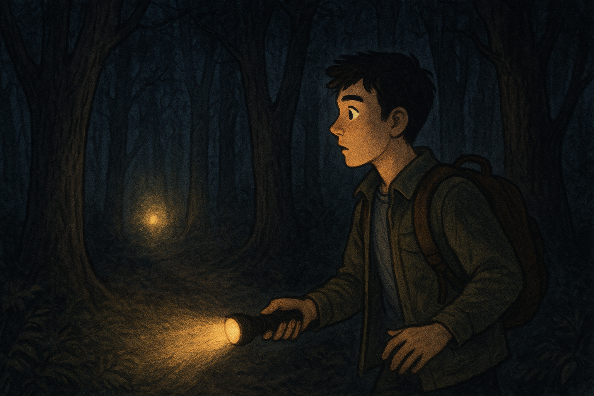

Eres Alex, un joven curioso que vive al borde de un antiguo bosque del que se cuentan muchas leyendas. Se dice que dentro vive “El Eco”, una presencia que castiga a quien entra a quien entra al bosque. Una noche, ves una luz extraña adentrándose entre los árboles. Contra toda advertencia , decides seguirla con una linterna y tu mochila.
Tras caminar unos minutos, el sendero se divide en dos:
Opción A: Tomas el camino cubierto de niebla, parece misterioso pero tranquilo.
Opción B: Tomas el camino iluminado por luciérnagas, escuchas ruidos extraños pero te atrae la luz.